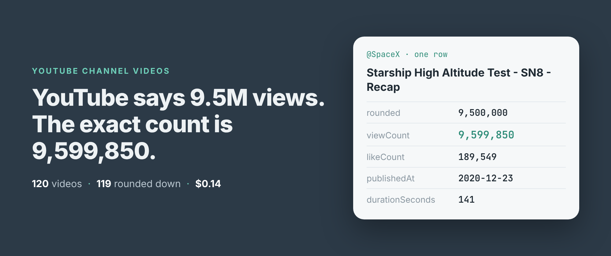
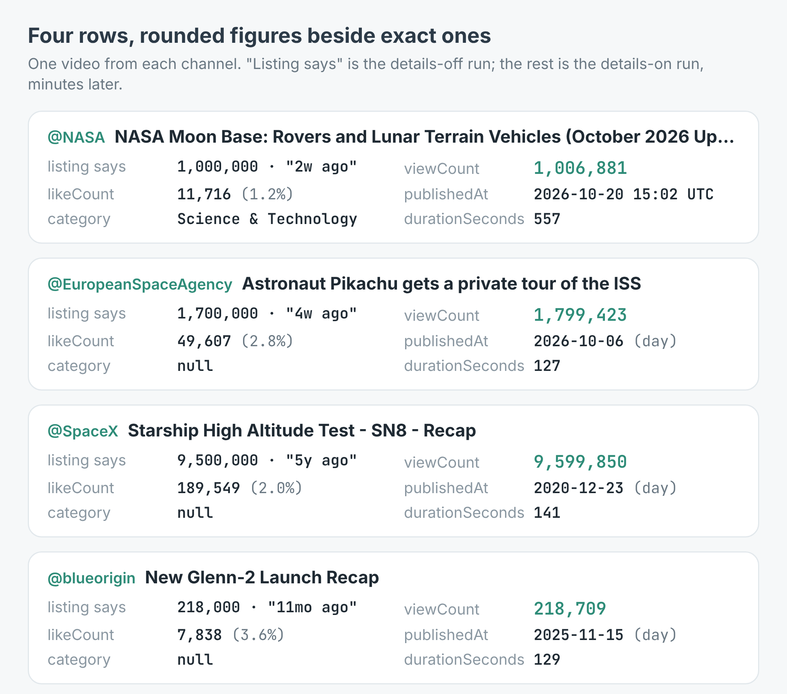
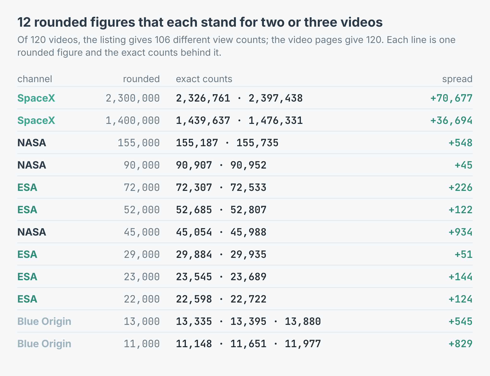
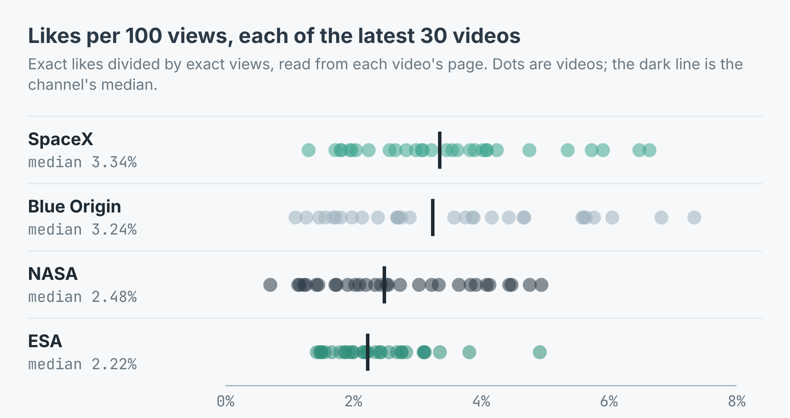

How to get exact view counts for a YouTube channel's videos (120 videos from NASA, ESA, SpaceX and Blue Origin)
I wrote this with an AI assistant. The runs, numbers and code are real, and I checked them.

SpaceX's channel page says its Starship SN8 recap has 9.5M views. The exact count, read from the video's own page a few minutes later, was 9,599,850. That's 99,850 views the label leaves out, on one video.
It matters as soon as you put two channels side by side. YouTube's channel pages round every count down, and they date every video with "1y ago" or "2mo ago". For a quick look that's fine. For a spreadsheet that ranks videos, works out a like rate or plots uploads by month, it isn't.
Two runs, same 120 videos
I build and run a YouTube channel scraper on Apify. It reads a channel's latest videos, up to 30, from the page YouTube serves a logged-out visitor. With includeVideoDetails on it also opens each video's page for the exact view count, the like count, the description and the publish date.
I picked four public space channels, @NASA, @EuropeanSpaceAgency, @SpaceX and @blueorigin, and ran them twice on the morning of 4 November: once with details off, once with them on. Here's the second in Node:
import { ApifyClient } from 'apify-client';
const client = new ApifyClient({ token: process.env.APIFY_TOKEN });
const run = await client.actor('simple.actor/youtube-channel-videos')
.call({ handles: ['@NASA', '@EuropeanSpaceAgency', '@SpaceX',
'@blueorigin'], maxVideos: 30, includeVideoDetails: true });
const { items } = await client.dataset(run.defaultDatasetId)
.listItems();
for (const v of items) {
if (v.error) continue; // a channel that couldn't be read
console.log(v.channelName, v.viewCount, v.likeCount, v.title);
}
The details-off run took 24 seconds and returned 120 videos. The details-on run took 4 minutes, one extra request per video, and returned the same 120, every one with an exact view count and a like count.

One video from each channel, with what the channel page said next to what the video's page said.How far off the rounded numbers are
119 of the 120 rounded counts were lower than the exact ones. The one that matched had 768 views, too few to round. The median gap was 518 views, 0.8% of the video's count. On the biggest videos it ran to tens of thousands: SN8 was short 99,850, ESA's "Astronaut Pikachu gets a private tour of the ISS" showed 1.7M for 1,799,423, and SpaceX's "Starship - The Holy Grail of Rocketry" showed 2.8M for 2,898,289. The largest gap in percent was on a Blue Origin video, 11,000 for 11,977, 8.2%.
Rounding also makes different videos look the same. The channel pages gave the 120 videos 106 different view counts. The video pages gave 120. Two SpaceX videos both read 2.3M, and they were 70,677 views apart.

Every rounded figure in the run that covered more than one video.Dates are worse. A channel page gives "1y ago" or "2mo ago", so without the video's page the scraper has to turn that into a date and flag it as approximate. Against the real publish days, those dates were off by a median of 19 days. 29 of 120 were off by more than a month, and five SpaceX videos by close to a year: "Starship's Fifth Flight Test" reads "1y ago", which works out to 3 November 2025, and was published on 6 November 2024.
What the exact figures show
With likes on every row you can compare channels that are nothing alike in size. NASA has 15.1M subscribers and Blue Origin 311,000, but per view Blue Origin's audience likes more. The median video on SpaceX got 3.34 likes per 100 views, Blue Origin 3.24, NASA 2.48 and ESA 2.22.

Exact likes divided by exact views for every video in the run.The exact counts also show how lopsided a channel can be. ESA's 30 latest videos had 3,109,187 views between them, and 58% of those were the Pikachu video. Its next best had 124,432. NASA's top video was its Moon Base update, 1,006,881 views and 11,716 likes. SpaceX's was the five-year-old SN8 recap.
What it cost
The listing charges $0.0004 for each video returned and another $0.0008 for each video whose page was read for the exact figures, on the Free and Starter plans. The higher plans pay less. The details-on run was 120 × $0.0004 + 120 × $0.0008 = $0.144. The details-off run was 120 × $0.0004 = $0.048. A channel that can't be read costs nothing.
So the exact figures are two thirds of the price. If all you want is to know what a channel posted this week, turn them off, add onlyVideosNewerThan: "7 days", and pay for the cheap read. Turn them on when the numbers go into a report.
Thirty videos, and a day rather than a time
Thirty is the most a channel page shows, so it's the most you get. For NASA that's April to October 2026 out of the 6,100 videos YouTube lists for it. SpaceX posts far less, and its 30 go back to October 2020. Every row carries channelVideoCount so you can tell which case you're in.
Only 35 of the 120 rows had the publish time and a category. The other 85 had the publish day at midnight UTC, flagged with publishedAtIsApproximate: true, and category: null. YouTube sends the time and category in data it holds back from most requests from datacenter addresses. The day is right, and for a monthly chart it's enough. Subscriber counts are YouTube's rounded figure on every row, 15.1M for NASA, flagged the same way.
9 videos came back with no description. And the handle has to be the channel's real one. My first attempt used @esa, which isn't ESA's handle: it came back as a not_found row, the run still succeeded, and the other three channels were read and charged as normal.
Make it your channels
The example repo, youtube-channel-stats-scraper, takes any number of channels, prints each one's top videos and median likes per 100 views, and writes every video to videos.csv, in Node and in Python. Swap in your own channel and the three you compete with, a set of creators you're thinking of sponsoring, or the brand channels in your trade, and run it once a month. Store channelId, not the handle: a handle can change, the id can't. The scraper is at apify.com/simple.actor/youtube-channel-videos.